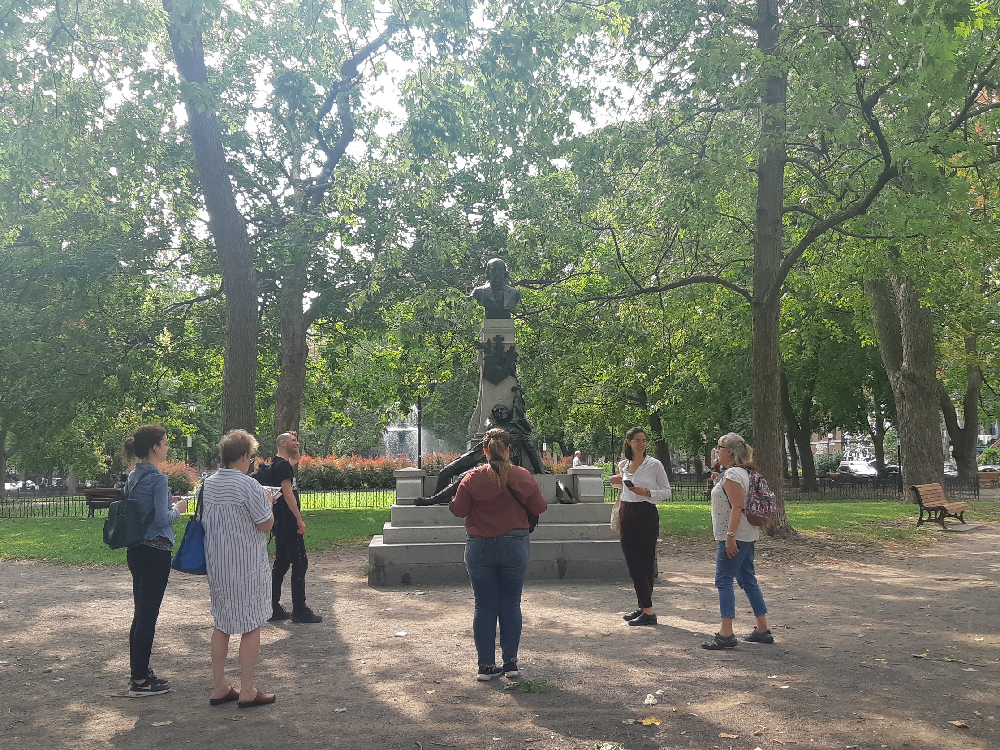
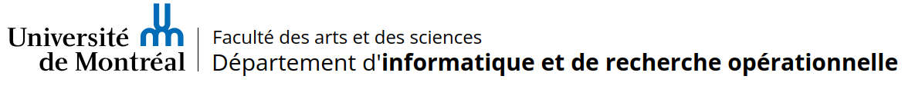
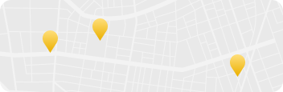

Découvrez l'art
qui vous entoure
Des caveaux de légumes de la Côte de Beaupré aux murales de Montréal, en passant par les envolées sculpturales d'Huguette Joncas aux Îles de la Madeleine, l'art et le patrimoine nous entourent, attendant d'être découverts et appréciés.
La Maison MONA, OSBL créé en 2020, se consacre à la valorisation de ces trésors artistiques et culturels, en proposant des activités au croisement de la culture et du numérique. Nous proposons :

Maison MONA
Historique
Le projet MONA est né en 2016 sous l’initiative de Lena Krause, chercheuse en histoire de l’art spécialisée dans le numérique. Le projet obtient du financement et prend son envol lors de son affiliation avec le groupe de recherche Art et Site à l’Université de Montréal en 2018. À l'été 2019, une campagne de socio-financement réussie vient souligner l'intérêt du public pour le projet. Ces fonds permettent son incorporation en un organisme sans but lucratif (OSBL) culturel : la Maison MONA (2020).
L'organisme conçoit et anime des activités de médiation culturelle dans l'espace public. Sous la forme de parcours dans les quartiers, ces activités ont notamment été élaborées pour des étudiant·e·s au Cégep et des jeunes en collaboration avec des organismes communautaires. MONA rejoint également un large public en participant annuellement aux Journées de la culture depuis 2019.
Mission
La Maison MONA est un organisme à but non lucratif inclusif et dynamique fondé en 2020, dont la mission est de :
- Inviter à des rencontres avec l'art.
- Créer un espace commun pour les échanges.
- Faire résonner les sens et les sensibilités de chacun·e.
Ses valeurs sont l'accessibilité, la diversité et le partage.
MONA développe ses projets en partenariat avec des établissements scolaires, des institutions culturelles et des organismes communautaires. L'organisme s'implique également dans diverses interventions artistiques dans l'espace urbain.

Équipe
- Camille Delattre, Direction des opérations et coordinatrice à la structuration des données
- Camila De Oliveira Savoi, Direction de la recherche
- Julie Graff, Direction artistique
- Lena MK, Direction technique et fondatrice
- Alexia Pinto Ferretti, Direction des publics
- Mariama Amadou Amadou, Développement serveur
- Marguerite Chiarello, Responsable des communications et consultante en médiation
- Corélie Godefroid, Développement serveur
- Simon Janssen, Responsable de l'infrastructure
- Christian Lungescu, Développement mobile
- Barbara Marche, Designer UI/UX
- Anissa Ould Ferroukh, Développement serveur
- Franck Hermand Takam Takam, Stage en développement web
- Jonathan Tannous, Développement mobile
- David Valentine, Consultation en sciences de l'information
Ancien·ne·s contributeurs et contributrices
Miliya Ai, développeuse serveur
Philippe Auclair, développeur Android
Voir les ancien·ne·s contributeurs et contributrices
- Miliya Ai, développeuse serveur
- Philippe Auclair, développeur Android
- Vincent Beauregard, développeur serveur et Android
- Dina Benkirane, développeuse Android
- Thomas Bui, développeur serveur
- Gaspard Damoiseau-Malraux, développeur Android
- Ming-Xia Delvas, développeuse Android
- Paul Chaffanet, développeur iOS
- Matija Dabić, développeur Android
- Sarah Heng, développeuse mobile
- Théodore Jordan, développeur Android
- Emma June Huebner, consultante en éducation
- Isabel Leon Arriz, développeuse iOS
- Émile Labbé, développeur Android
- Manping Li, développeuse serveur
- Tiffany Maynard, responsable de l'alignement avec Wikidata
- Mohammed Naim, développeur Android
- Bojan Odobasic, développeur iOS
- Vi Phung, développeur serveur
- Jean-Marc Prud'homme, développeur iOS
- Abdelhakim Qbaich, développeur serveur
- Nemanja Mitrovic, développeur Android
- Mathieu Perron, développeur serveur
- Natacha Rivière, développeuse serveur
- Yuning Sun, développeuse serveur
- Kim Trinh, développeuse mobile
- Xiaoqian Wang, développeuse iOS
- Quentin Wolak, développeur iOS
- Jianxin You, développeur serveur
- Yan Zhuang, développeur iOS
- Kim Gobeil, présidente du C.A. 2020-2021
- Sébastien Provencher, secrétaire du C.A. 2020-2022
- Cathyane Dufort, trésorière du C.A. 2020-2022
- Shadi Abdoli, responsable à la structuration des données
- Marie Achille, consultante en accessibilité
- Émy Charron-Milot, stagiaire en recherche et communication
- Sarah Dumaresq, responsable des partenariats pédagogiques et des réseaux sociaux
- Gilbert Fortin, graphiste
- Valeria Guadalupe Márquez Reynoso, co-responsable des activités de médiation
- Aurélie Guye-Perrault, recherche en histoire de l'art
- Roberto Martinez, graphiste
- Anna Papakostidis, co-responsable des activités de médiation
- Tristan Quiniou, stagiaire en recherche et développement
- Sandrine Rodrigue, graphiste
- Zuzanna Rokita, graphiste
- Laurent Tousignant, stagiaire en muséologie
Conseil d'administration
- Sarah Dumaresq Secrétariat
- Thiago Freitas Administration
- Aurore Lerouge Trésorerie
- Frédéric Limoges Présidence
- Lena Krause Vice-présidence
Lena Krause est la personne responsable de la protection des renseignements personnels.
Nos partenaires
L'organisme collabore avec le groupe de recherche Art et site et la professeure Suzanne Paquet, ainsi qu'avec le département d'informatique et de recherche opérationnelle (DIRO) de l'Université de Montréal.

Contact
7440 rue Rousselot
Montréal, H2E 1Z3 Qc.
Téléphone : +1 (514) 562 3072
Courriel : info@monamontreal.org
Facebook : MONA.ArtPublic
Instagram : mona.artpublic
